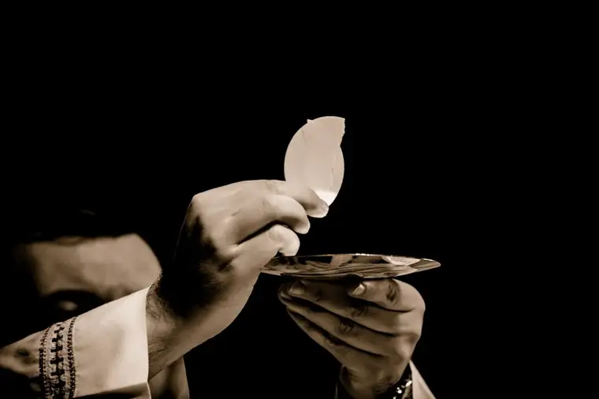

With so many churches closing throughout the country, I was grateful to attend Mass this past Sunday, March 15, at St. Joan of Arc in Phoenix, where I was visiting with my three sons. It would be the very last thing I’d do before a hasty exit for the airport to catch my flight home. My youngest sons would be following on their school tour bus.
Since things are changing hourly in these surreal days of the novel Covid-19 virus, I did have the thought that it might be the last time I would receive Jesus in the Eucharist for a while. Waiting in the courtyard outside, son #2 informed me Mass would begin a half-hour later than I’d thought. With a tight schedule, and knowing I’d likely have to leave straight after Communion, a slight panic settled in my soul. A long Gospel reading, combined with a long homily, followed with a special, fairly long welcoming for those planning to enter the Church at Easter, brought the disappointed realization I would not be able to stay long enough to receive Jesus. My “possible last chance for a while” had quickly become “you’re out of luck.”

My soul ached as I walked away with my friend Karen, just before the priest began to prepare the Eucharistic table. Solace quickly came in the fact that I would be in solidarity with my travel companion, who, as a Celiac disease sufferer, already had prepared herself for a spiritual Communion in the absence of the chalice and gluten-free hosts. Together, we would be in sync with so many Catholics across the country who would, for the first time in years in some cases, be denied so great a gift as Jesus in transubstantiated form.
Just months ago, this would have seemed inconceivable, but here we were, in the middle of a world crisis, certainly not alone in our duress. And only days earlier, I’d been pondering the recent shuttering of church doors in Italy — in Rome of all places — and how some of the faithful would now better understand the deficit experienced by our brothers and sisters who rarely experience frequent Communion due to remoteness, lack of priests, and other reasons beyond their control.
I’d also been thinking of Edith Stein, who, on a train headed toward her eventual death at Auschwitz during World War II, conceded, but with hope still, the loss of the sacraments she’d come to adore and depend on, writing in a final letter: “Of course, so far, there has been no Mass or Communion; maybe that will come later. Now we have a chance to experience a little how to live purely from within.”
Ever since reading this Carmelite saint’s beautiful words of relinquishment years ago, I’ve often reflected on her calm resignation, but without supposing this would be applicable to my life. Suddenly, overnight almost, it is, to me and many others.
Perhaps providentially, I’d also recently reopened, “He Leadeth Me,” by Fr. Walter Ciszek, an American priest who spent time in a Russian gulag during the same war that claimed the life of Stein, a.k.a. St. Teresa Benedicta of the Cross. It helped me in this moment of deprivation to recall Ciszek’s writings, especially his account of the deprivations he’d experienced when denied the Eucharist for five long years while detained in Lubianka. “I turned to God in prayer, made frequent acts of spiritual communion throughout the day, but I literally hungered to be able to receive him once again.”
Later, while in prison camps in Siberia, Ciszek once again — though through great peril — was able to celebrate the Mass, often in unusual fashion.
“We said Mass in draft storage shacks, or huddled in mud and slush in the corner of a building site foundation of an underground. The intensity of devotion of both priests and prisoners made up for everything; there were no altars, candles, bells, flowers, music, snow-white linens, stained glass, or the warmth that even the simplest parish church could offer,” he recalled. “Yet in these primitive conditions, the Mass brought you closer to God than anyone might conceivably imagine. The realization of what was happening on the board, box, or stone used in place of an altar penetrated deep into the soul.”
All of these reminders have helped me come to terms with this new reality. As we face, together, the losses brought by this worldwide crisis, and having to abandon some of the practices to which we faithful have become accustomed, calling to mind the plights of others can help us realize that while the lack of the Eucharist is a true loss, these deprivations can help us learn, like Stein suggested, how “to live purely from within.”
Edith’s suggestion seems to be the answer to this question: “What will we do without the Eucharist?” For if our holy brothers and sisters in Christ who suffered and went without our Lord could manage this loss, so can we.
The Eucharist is a supreme gift that many of even the most appreciative of us sometimes take for granted. But God will not abandon us in its absence anymore than he did his other beloved children who went without, and yet whose lives were lived for Him alone. Let us look to their examples of courage and remember that we, too, were made to be saints. Perhaps this is our chance to take this quest seriously.
Above all, remember God’s promise that he would be with us always. With that in mind, let us take heart together, praying fervently for one another in constant hope.
Q4U: Have you ever had to live “purely from within”? How will you prepare to do so now?